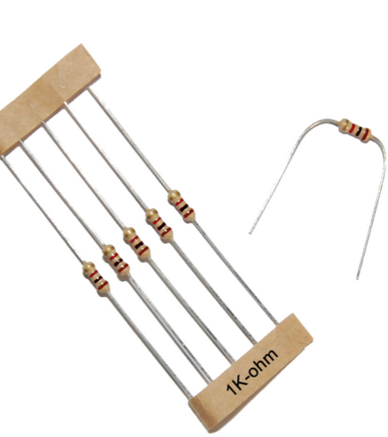

Arduino and Circuits

Arduino Board: Our arduino boards are programmable circuit boards. (As pictured above.)
Circuit: A closed loop, like a circle, that allows electricity to flow from a power source through any components. Electricity only wants to flow through a path that forms a complete loop.
Electricity wants to flow from a source of higher electricity in the direction of less electricity. Think of this like water. Water wants to flow from a lake with lots of water down hill. We refer to the source of electricity as the positive/+ side of a circuit because you can think of it has having a lot more electricity already added in. The circuit then flows towards negative/- because it's where we will subtract the electricity from the circuit.
On the Arduino boards we use, the 5v (5 volts) port is the main source of our electricity for our circuits, it is the source of the positive electricity. All our circuits then need to end in a GND port. GND stands for Ground this is the negative end of our circuit.

LED: Light-emitting diode a little electrical device that lights up when supplied with electricity.
The LED's we will be using right now have 2 legs. It matters where we place these. The LED's get powered when electricity flows form the positive leg to the negative leg.
The positive leg is the longer leg. Think of the positive leg as being longer because it has been added to.
The negative leg is the shorter leg. Think of the negative leg as being shorter because it has been subtracted/minused from.
Sometimes, as we build circuits, we can't see the LED legs. The LED's also have a plastic edge around them. The negative side has a flat edge. I remember this because the negative side is flat like the minus sign -.

Resistor: Resistors are components that help control the flow of electricity by reducing the amount of electricity that flows through them.
Some components can only handle a certain amount of electricity before bad things can happen. For example, our LED's can only handle 3 volts of electricity before they burn out. (Our Arduino will supply 5 volts of electricity without a resistor.) 😱

A circuit to power an LED.